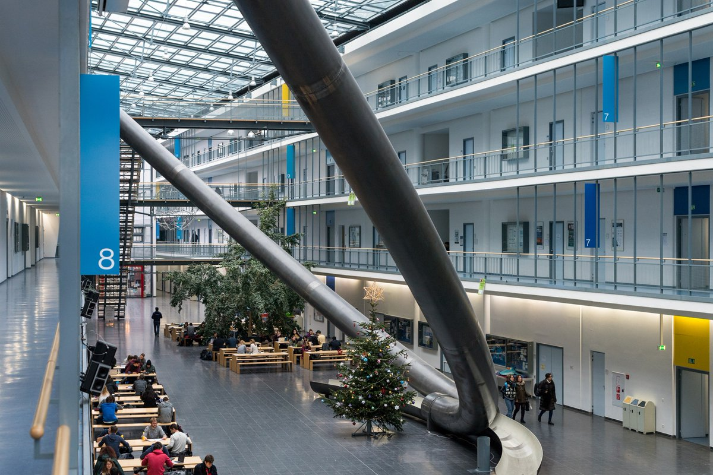

Mi experiencia en Munich
Vivi y estudie en Munich durante 6 meses y te cuento mi experiencia.
Estudie en la Universidad Tecnica de Munich, en alemán Technische Universitat Munchen (TUM). Es una de las principales universidades técnicas de Europa. TUM se destaca por su excelencia académica e investigación de vanguardia en áreas como la ingeniería, las ciencias naturales, las ciencias de la vida y la medicina. La universidad cuenta con una amplia gama de programas de estudio, desde licenciaturas hasta doctorados, y atrae a estudiantes internacionales de todo el mundo. TUM también tiene una estrecha colaboración con la industria y se enorgullece de su enfoque práctico y de la transferencia de conocimientos al mundo real.
Estudié en la Escuela de Negocios o School of Management ubicada en el centro de la ciudad. Estudie el bachillerato en "Management and Technology".
La universidad permite estudiar tanto en alemán como en inglés, siempre que este sea tu idioma nativo o tengas un certificado válido de nivel B2 del idioma. Yo estudie 100% en inglés, lo cual me permitio compartir cursos tanto con estudiantes locales como internacionales.
La universidad es pública, a pesar de que se debe pagar una matriculación semestral. Cuenta con numerosas facultades ubicadas en varios puntos de la ciudad. Las sedes más grandes se encuentran en el centro de la ciudad y en Garching. Ambas son de fácil acceso, a pesar de que la segunda sede es a 40 minutos del centro de la ciudad.
Si estas pensando en estudiar en Munich es importante que sepas que es muy dificil encontrar departamento, habitación o casa. Los precios son muy elevados, es la ciudad más cara de Alemania y la tercera más cara de Europa. Es por esto que para los estudiantes se recomienda alojarse en una residencia estudiantil. Esta opcion es la más económica y práctica. Ademas de ser la mejor opcion para conocer estudiantes de todo el mundo.

A traves de Studentenwerk consegui alojarme en una residencia de estudiantes a un muy bajo costo. La residencia en donde me aloje está ubicada en el norte de la ciudad, en el barrio Nordheide, en la calle Felsennelkenanger. Mi experiencia fue excelente y la recomiendo al 100%